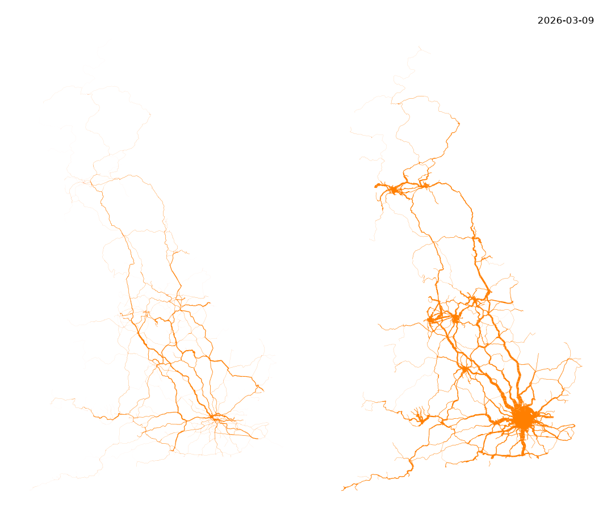
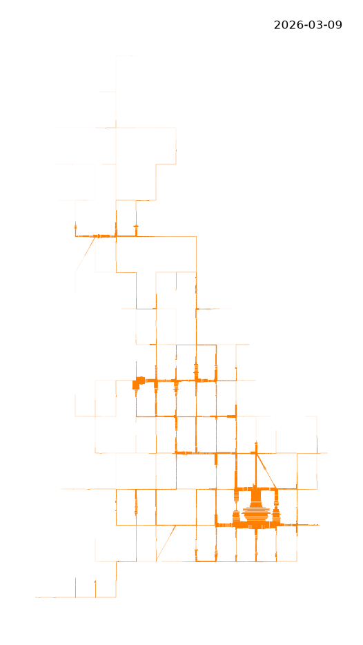
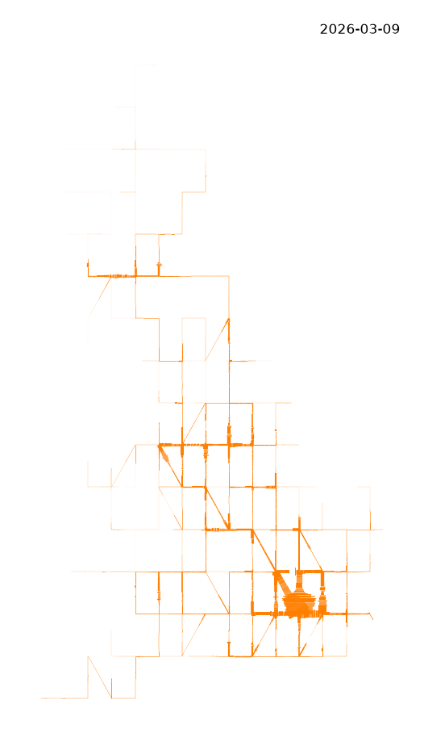
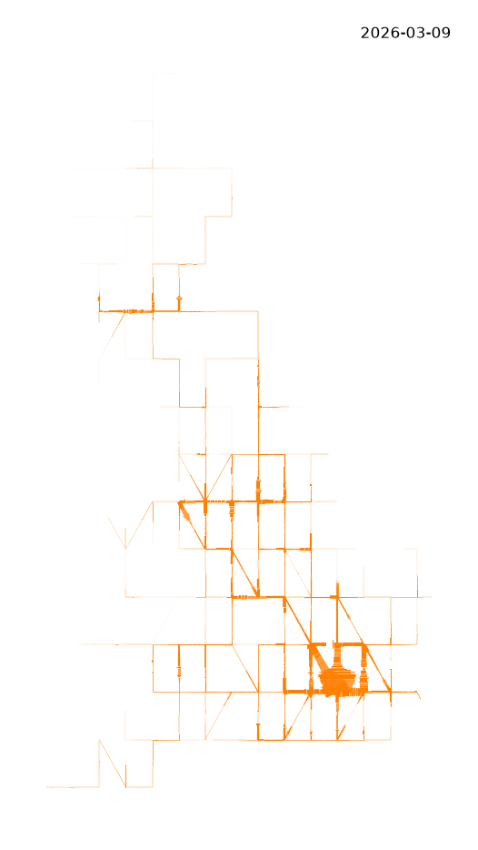
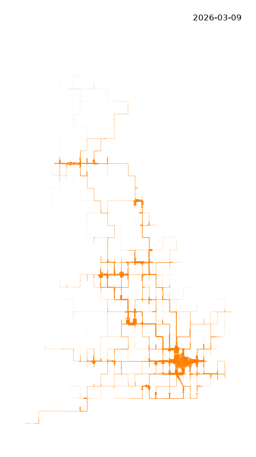
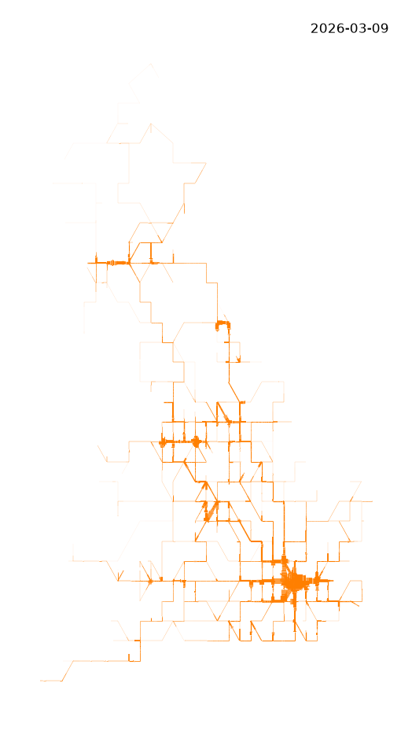
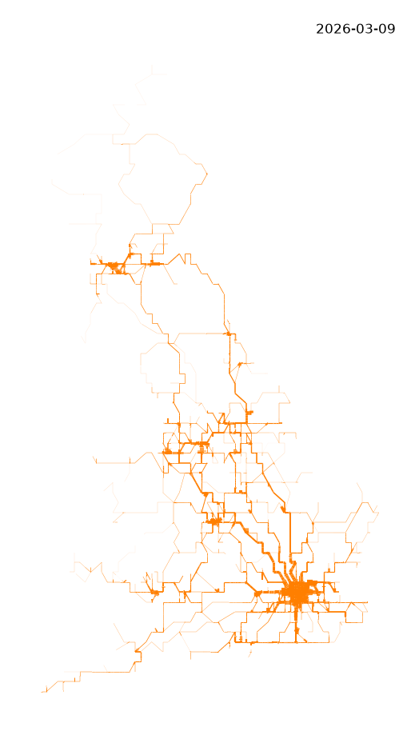
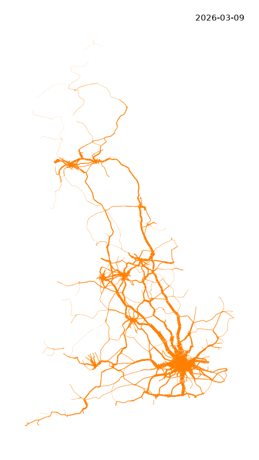

Netzwerk
Centre-Line Network Model
For those interested in such things, here is a visualization of timetabled passenger and freight movement on the #British heavy-rail network, aggregated over the week 2026-03-09 to 2026-03-15. This shows movement of train services based on TIPLOC to TIPLOC segments on maps with a series of TopoJSON simplification network simplification applied to a base map projected in OSGB36 (EPSG:27000), varying scale and quantization.
#rail #passenger #freight #data #visualization
Static
Aggregated heavy railway weekly services 2026 03 09 with TopoJSON simplification
Network Model
No simplification or quantization.

Freight services (left) and Passenger services (right)Topo Model quantize 16 vary scale



Topo Model quantize 64 vary scale

Topo Model quantize 128 vary scale
Topo Model scale 1 vary quantization

Topo Model scale 107 vary quantization





Reference and License
This is published under CC BY 4.0 Attribution and details about the licenses and open data used.